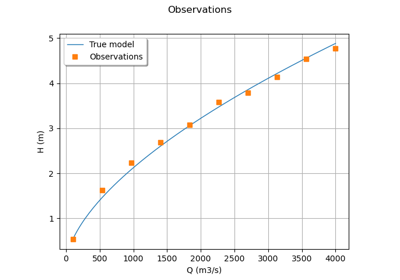
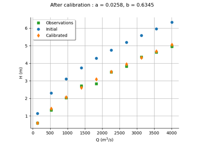
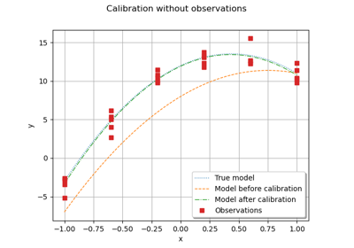

Least squares and gaussian calibration¶

Generate flooding model observations
Generate flooding model observations

Calibrate a parametric model: a quick-start guide to calibration
Calibrate a parametric model: a quick-start guide to calibration

Generate observations of the Chaboche mechanical model
Generate observations of the Chaboche mechanical model

Calibration without observed inputs
Calibration without observed inputs